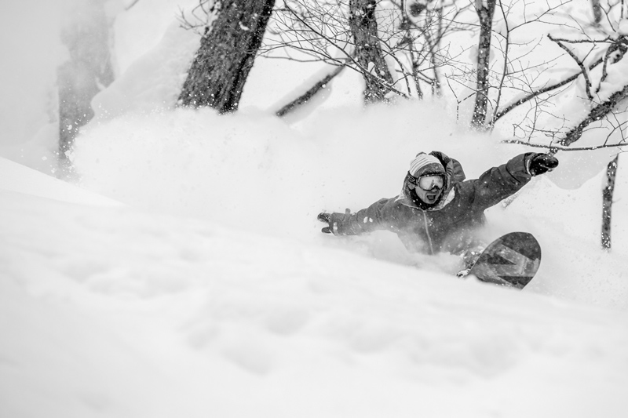

Progression Never Stops
Freestyle progression moves faster every season. Riders are combining technical rail tricks with massive jumps, constantly redefining what’s possible on snow. From late-night street missions to perfectly shaped park jumps, the next generation continues to blur the line between sport and creativity.
Social media and video edits have completely changed the pace of freestyle progression across the snowboard scene. Riders are now able to watch clips from mountains, parks, and urban spots around the world only moments after they are filmed. A new trick combination landed in Japan or Scandinavia can inspire riders in North America within the same day, creating a constant cycle of innovation and creativity. Video edits have become more than highlights — they are now one of the biggest ways riders build influence, shape trends, and define the visual identity of modern freestyle snowboarding. Many younger riders spend hours studying clips online, breaking down body movement, style, and trick execution before trying them for themselves in the park or on the streets.

Terrain parks have also evolved dramatically to support the next generation of freestyle riding. Park crews spend countless hours shaping jumps, rails, transitions, and landing zones to create spaces where riders can safely experiment and continue progressing. Modern parks feature everything from beginner lines to massive jump sections and highly technical rail setups that challenge even professional snowboarders. Creative park design has become an important part of snowboard culture because every feature influences the type of tricks riders attempt and the style they develop. Some parks focus on smooth flow and large transitions, while others are designed to encourage more technical and creative riding styles through unique rail combinations and unconventional setups.
Street snowboarding continues to play a huge role in pushing freestyle progression beyond the limits of traditional contests and terrain parks. Riders search for handrails, stair sets, rooftops, walls, and other urban features that force them to adapt to unpredictable environments and difficult conditions. Unlike perfectly groomed terrain parks, street spots often involve rough snow, limited speed, and dangerous landings, which makes every successful trick feel more raw and authentic. Many snowboarders believe that street riding represents the most creative side of freestyle culture because it allows riders to transform ordinary city spaces into completely new environments for progression. Street video parts often capture the DIY spirit that has always existed at the core of snowboarding culture.

Even as tricks continue becoming more technical and advanced, style remains one of the most important parts of freestyle snowboarding. Riders are judged not only by the difficulty of a trick, but by how smooth, controlled, and creative they make it look. A stylish method grab, clean landing, or unique approach to a feature can leave a stronger impression than simply spinning more rotations. This balance between progression and individuality is what separates freestyle snowboarding from many other sports. The riders shaping the future of the scene understand that true progression is not only about pushing physical limits, but also about developing a personal style that reflects creativity, confidence, and self-expression on snow.
